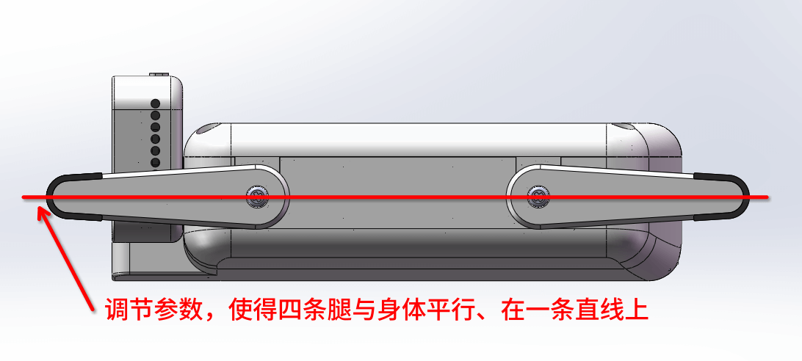

预置动作
试试按住这里并拖动
舵机校准说明
ESP-Hi 组装完成后，舵机的基准位置可能不在同一平面上，这种状态下 ESP-Hi 常常无法正常运动，需要校准。
校准步骤：
- 点击"进入舵机校准模式"，ESP-Hi 会尝试将四条腿放平。
- 点击屏幕上的四个舵机按钮微调四个舵机的角度，直到四条腿都与身体在同一条直线上。如果发现无法调平，请拧下腿与舵机间的螺丝，调整角度后拧回。
- 点击"退出校准模式"按钮，ESP-Hi 会退出校准模式。

不要徒手掰动舵机，否则可能会损坏舵机！
前左0
前右0
后左0
后右0
ESP-Hi
0